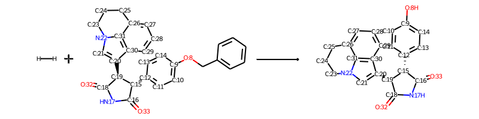
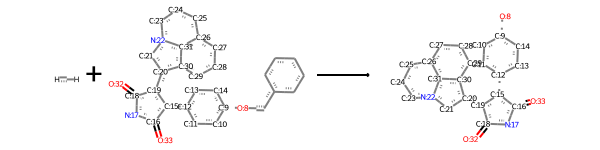
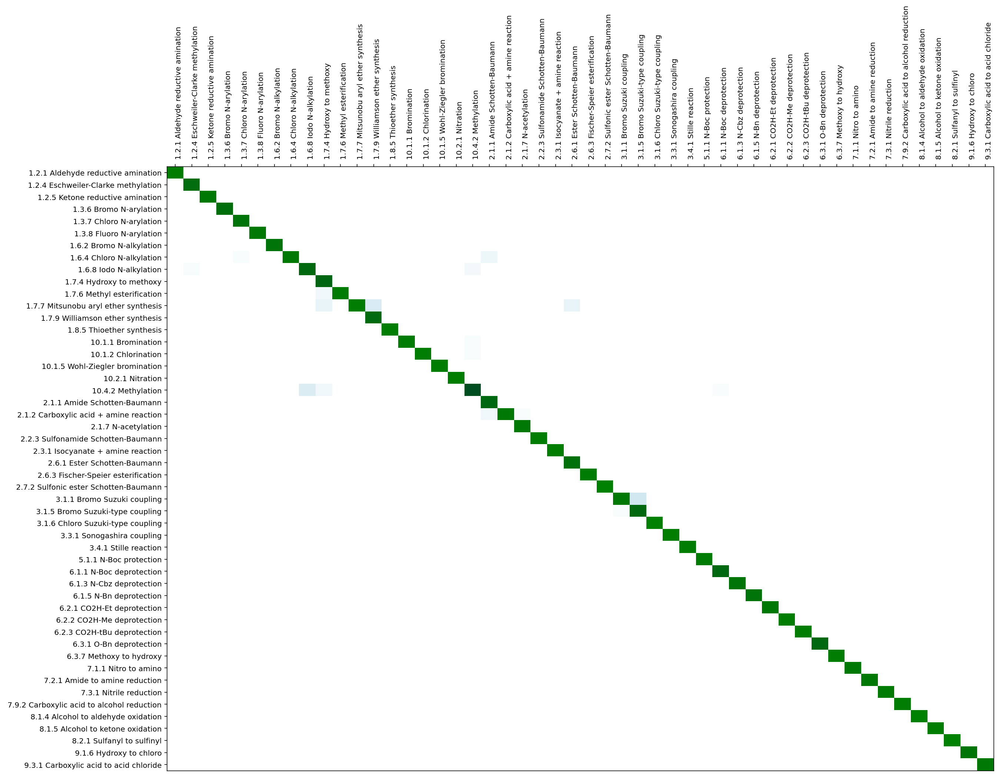

import os
import pandas as pd
import numpy as np What?
Using data-driven methods to classify reactions in different categories.
Why?
Categorically sorting (new) reactions can help with better documentation and developing a broader understanding of mechanisms possibles in the reactions.
How?
A chemical reaction is descirbed using a three-level reaction ontology based on the hierarchy proposed by Carey, Laffan, Thomson and Williams in 2006.
In this scheme, every reaction is grouped using 3 layers of information: superclass >> class >> type
Fo example: Suzuki reaction is as follows:
"3 Carbon-Carbon bond formation" (Superclass)
|- "3.1. Suzuki coupling" (Class)
|- 3.1.1 Bromo OR 3.1.2 Chloro OR 3.1.3 Iodo Suzuki Coupling (Type)
|- "3.5 Palladium-catalyzed C-C bond formation" (Class)
|- 3.5.3 Negishi coupling (Type)Researchers at NextMove software were among the first groups to scrap US Patent literature for chemical reactions and use the categories defined above to systematically classify the reactions.
Another important step in this process is the atom-atom mapping of the chemical reactions. While not a crucial step (as newer algorithms can perform this task without explicit atom-mapping) it is an important pre-processing standardization operation.
Atom-atom mapping helps to understand which reactant atom becomes which product atom during the reaction. From this information it is possible to identify reaction centers and sets of bonds made and broken during the reaction.
This is also useful in distinguishing reactants and products.
By convention:
Reactant: Contribute one more more atoms to the product
Reagents (solvent, catalyst): Do not contribute any atom to the product(s)
Relevant papers in this field can be found here
Using the Schneider et. al. paper for reference - https://pubs.acs.org/doi/10.1021/ci5006614
import rdkit
from rdkit import Chem
from rdkit.Chem import AllChem
from rdkit.Chem import Draw
from rdkit.Chem.Draw import IPythonConsole
from IPython.display import Image
IPythonConsole.ipython_useSVG=True try:
import cPickle as pickle
except:
import pickle # View reactions
def display_rxn(rxn_smarts):
rxn = AllChem.ReactionFromSmarts(rxn_smarts,useSmiles=True)
d2d = Draw.MolDraw2DCairo(800,200)
d2d.DrawReaction(rxn)
png = d2d.GetDrawingText()
return Image(png)# Mute all errors except critical
Chem.WrapLogs()
lg = rdkit.RDLogger.logger()
lg.setLevel(rdkit.RDLogger.CRITICAL)import matplotlib.pyplot as plt
from matplotlib.pyplot import cm
# High DPI rendering for mac
%config InlineBackend.figure_format = 'retina'
# Plot matplotlib plots with white background:
%config InlineBackend.print_figure_kwargs={'facecolor' : "w"}# Data directories
data_dir = 'DATA/Schneider_etal_ChemReactionClassification/data'# reaction types
with open(os.path.join(data_dir, 'reactionTypes_training_test_set_patent_data.pkl'), 'rb') as f:
reaction_types = pickle.load(f)
# reaction classification data
with open(os.path.join(data_dir, 'names_rTypes_classes_superclasses_training_test_set_patent_data.pkl'), 'rb') as f:
names_rTypes = pickle.load(f)len(reaction_types)50names_rTypes is a super set of all possible reaction there are
names_rTypes{'3.1.1': 'Bromo Suzuki coupling',
'6.1.5': 'N-Bn deprotection',
'3.1.6': 'Chloro Suzuki-type coupling',
'3.1.5': 'Bromo Suzuki-type coupling',
'6.1.1': 'N-Boc deprotection',
'9.1.6': 'Hydroxy to chloro',
'7.2': 'Amide to amine reduction',
'7.3': 'Cyano or imine to amine',
'7.1': 'Nitro to amine reduction',
'6.3': 'ROH deprotections',
'6.2': 'RCO2H deprotections',
'6.1': 'NH deprotections',
'7.9': 'Other reductions',
'6.1.3': 'N-Cbz deprotection',
'10.1': 'Halogenation',
'10.2': 'Nitration',
'10.4': 'Other functional group addition',
'1.6.2': 'Bromo N-alkylation',
'1.6.4': 'Chloro N-alkylation',
'8': 'Oxidations',
'1.6.8': 'Iodo N-alkylation',
'1.7.7': 'Mitsunobu aryl ether synthesis',
'1.8.5': 'Thioether synthesis',
'10.1.1': 'Bromination',
'10.1.2': 'Chlorination',
'10.1.5': 'Wohl-Ziegler bromination',
'9.3.1': 'Carboxylic acid to acid chloride',
'7.9.2': 'Carboxylic acid to alcohol reduction',
'3.4': 'Stille reaction',
'3.3': 'Sonogashira reaction',
'3.1': 'Suzuki coupling',
'2.3': 'N-acylation to urea',
'2.2': 'N-sulfonylation',
'2.1': 'N-acylation to amide',
'2.7': 'O-sulfonylation',
'2.6': 'O-acylation to ester',
'7.2.1': 'Amide to amine reduction',
'3': 'C-C bond formation',
'7': 'Reductions',
'10.4.2': 'Methylation',
'3.4.1': 'Stille reaction',
'6.2.1': 'CO2H-Et deprotection',
'6.2.3': 'CO2H-tBu deprotection',
'6.2.2': 'CO2H-Me deprotection',
'2.2.3': 'Sulfonamide Schotten-Baumann',
'8.1': 'Alcohols to aldehydes',
'8.2': 'Oxidations at sulfur',
'10.2.1': 'Nitration',
'2': 'Acylation and related processes',
'6': 'Deprotections',
'9.1': 'Alcohol to halide',
'9.3': 'Acid to acid chloride',
'1.3.7': 'Chloro N-arylation',
'1.3.6': 'Bromo N-arylation',
'1.3.8': 'Fluoro N-arylation',
'8.2.1': 'Sulfanyl to sulfinyl',
'10': 'Functional group addition (FGA)',
'2.6.1': 'Ester Schotten-Baumann',
'2.6.3': 'Fischer-Speier esterification',
'3.3.1': 'Sonogashira coupling',
'6.3.7': 'Methoxy to hydroxy',
'6.3.1': 'O-Bn deprotection',
'1.6': 'Heteroaryl N-alkylation',
'1.7': 'O-substitution',
'1.2': 'Reductive amination',
'1.3': 'N-arylation with Ar-X',
'1.8': 'S-substitution',
'2.7.2': 'Sulfonic ester Schotten-Baumann',
'2.1.2': 'Carboxylic acid + amine reaction',
'2.1.1': 'Amide Schotten-Baumann',
'2.1.7': 'N-acetylation',
'5.1': 'NH protections',
'1': 'Heteroatom alkylation and arylation',
'5': 'Protections',
'1.7.9': 'Williamson ether synthesis',
'9': 'Functional group interconversion (FGI)',
'1.7.6': 'Methyl esterification',
'1.7.4': 'Hydroxy to methoxy',
'2.3.1': 'Isocyanate + amine reaction',
'1.2.4': 'Eschweiler-Clarke methylation',
'1.2.5': 'Ketone reductive amination',
'1.2.1': 'Aldehyde reductive amination',
'8.1.4': 'Alcohol to aldehyde oxidation',
'8.1.5': 'Alcohol to ketone oxidation',
'5.1.1': 'N-Boc protection',
'7.1.1': 'Nitro to amino',
'7.3.1': 'Nitrile reduction'}# Loading the rxn files
import gzip
infile = gzip.open( os.path.join(data_dir, 'training_test_set_patent_data.pkl.gz'), 'rb' )rxn_data_list = []
lineNo = 0
while True:
lineNo+=1
try:
smi,lbl,klass = pickle.load(infile)
except EOFError:
break
rxn_data_list.append([smi,lbl,klass])
if lineNo%10000 == 0:
print("Done "+str(lineNo)) Done 10000
Done 20000
Done 30000
Done 40000
Done 50000len(rxn_data_list)50000Viewing it as Pandas dataframe
column_names = ['SMILES', 'Patent No', 'Rxn Class']
df_rxn = pd.DataFrame(rxn_data_list, columns=column_names)df_rxn| SMILES | Patent No | Rxn Class | |
|---|---|---|---|
| 0 | [CH3:17][S:14](=[O:15])(=[O:16])[N:11]1[CH2:10... | US06887874 | 6.1.5 |
| 1 | O.O.[Na+].[CH3:1][c:2]1[cH:7][c:6]([N+:8](=O)[... | US07056926 | 7.1.1 |
| 2 | [CH3:1][O:2][c:3]1[cH:4][cH:5][c:6](-[c:9]2[cH... | US08492378 | 1.8.5 |
| 3 | Cl.[CH3:43][CH2:42][S:44](=[O:45])(=[O:46])Cl.... | US08592454 | 2.2.3 |
| 4 | [CH3:25][O:24][c:21]1[cH:22][cH:23][c:17]([O:1... | US06716851 | 1.3.7 |
| ... | ... | ... | ... |
| 49995 | [BH4-].[Na+].[CH3:25][O:24][c:19]1[cH:18][c:17... | US08324216 | 7.3.1 |
| 49996 | [BH4-].[Na+].[N:30]#[C:29][c:26]1[cH:25][cH:24... | US07595398 | 7.3.1 |
| 49997 | [N:15]#[C:14][CH2:13][c:1]1[cH:2][n:3][n:4]2[c... | US08273761 | 7.3.1 |
| 49998 | B.Cl.CO.[CH3:12][C:8]([OH:13])([CH2:9][C:10]#[... | US08609849 | 7.3.1 |
| 49999 | [CH3:2][CH2:1][O:3][C:4](=[O:5])[C:6]1([C:14]#... | US07030267 | 7.3.1 |
50000 rows × 3 columns
df_rxn.dtypesSMILES object
Patent No object
Rxn Class object
dtype: objectdf_rxn['Rxn Class'].value_counts()6.1.5 1000
3.3.1 1000
1.3.8 1000
1.3.6 1000
3.1.5 1000
6.2.3 1000
3.4.1 1000
6.1.3 1000
1.7.6 1000
10.1.2 1000
9.1.6 1000
10.1.5 1000
10.4.2 1000
7.1.1 1000
6.3.1 1000
1.7.7 1000
7.9.2 1000
8.1.5 1000
1.7.4 1000
7.2.1 1000
8.1.4 1000
8.2.1 1000
7.3.1 1000
2.1.7 1000
9.3.1 1000
6.1.1 1000
6.3.7 1000
2.1.2 1000
1.8.5 1000
2.2.3 1000
1.3.7 1000
1.7.9 1000
6.2.2 1000
2.7.2 1000
2.6.1 1000
1.6.8 1000
3.1.1 1000
1.6.2 1000
1.2.1 1000
1.6.4 1000
1.2.5 1000
2.3.1 1000
5.1.1 1000
10.1.1 1000
2.1.1 1000
2.6.3 1000
6.2.1 1000
10.2.1 1000
1.2.4 1000
3.1.6 1000
Name: Rxn Class, dtype: int64df_rxn.iloc[42069]SMILES [H][H].[O:32]=[C:18]1[NH:17][C:16](=[O:33])[C@...
Patent No US08377927
Rxn Class 6.3.1
Name: 42069, dtype: objectdf_rxn.SMILES[42069]'[H][H].[O:32]=[C:18]1[NH:17][C:16](=[O:33])[C@@H:15]([c:12]2[cH:11][cH:10][c:9]([O:8]Cc3ccccc3)[cH:14][cH:13]2)[C@@H:19]1[c:20]1[cH:21][n:22]2[c:31]3[c:30]1[cH:29][cH:28][cH:27][c:26]3[CH2:25][CH2:24][CH2:23]2>>[O:32]=[C:18]1[NH:17][C:16](=[O:33])[C@@H:15]([c:12]2[cH:13][cH:14][c:9]([OH:8])[cH:10][cH:11]2)[C@@H:19]1[c:20]1[cH:21][n:22]2[c:31]3[c:30]1[cH:29][cH:28][cH:27][c:26]3[CH2:25][CH2:24][CH2:23]2'display_rxn(df_rxn.SMILES[42069])
Generate Chemical Entries object in Rdkit from the RXN SMILES
%%time
# Convert Smiles strings to reaction objects - this takes the most time and might be helpful if parallelized
from rdkit.Chem import rdChemReactions # Main reaction analysis class
df_rxn['rxn_obj'] = df_rxn['SMILES'].apply(rdChemReactions.ReactionFromSmarts)CPU times: user 13.9 s, sys: 1.61 s, total: 15.5 s
Wall time: 15.5 sdf_rxn['rxn_obj'][42069]
temp_rxn = df_rxn['rxn_obj'][42069]type(temp_rxn)rdkit.Chem.rdChemReactions.ChemicalReactionFingerprints in RDkit
More information here: https://www.rdkit.org/UGM/2012/Landrum_RDKit_UGM.Fingerprints.Final.pptx.pdf
Base reaction class in RDKit reaction class now moved to a new class name: http://rdkit.org/docs/source/rdkit.Chem.rdChemReactions.html
Here I am using Reaction Difference FPs for converting to FPs - another option is to use the Transformation FPs
| Fingerprint Type | Meaning |
|---|---|
| Difference FPs | Take difference of structural FPs of reactant and product |
| Structural FPs | Concatenate the FPs of reactant and product in 1 vector |
Another option: - Adding in agent during the fingerprint generation – weighting its importance - Appending the agent after the FP formation
# Check to see if you can convert this to RDkit FPs
AllChem.ReactionFingerprintParams()<rdkit.Chem.rdChemReactions.ReactionFingerprintParams at 0x2ba8fcb9f670>Chem.rdChemReactions.ReactionFingerprintParams()<rdkit.Chem.rdChemReactions.ReactionFingerprintParams at 0x2ba8fcb988b0>rdChemReactions.CreateDifferenceFingerprintForReaction(temp_rxn)<rdkit.DataStructs.cDataStructs.UIntSparseIntVect at 0x2ba8fcfa87b0>Function to include agent in the FPs
# Featurize the agents in the rxn
## This is taken from the paper SI
def create_agent_feature_FP(rxn):
rxn.RemoveUnmappedReactantTemplates()
agent_feature_Fp = [0.0]*9
for nra in range(rxn.GetNumAgentTemplates()):
mol = rxn.GetAgentTemplate(nra)
mol.UpdatePropertyCache(strict=False)
Chem.GetSSSR(mol)
try:
ri = mol.GetRingInfo()
agent_feature_Fp[0] += Descriptors.MolWt(mol)
agent_feature_Fp[1] += mol.GetNumAtoms()
agent_feature_Fp[2] += ri.NumRings()
agent_feature_Fp[3] += Descriptors.MolLogP(mol)
agent_feature_Fp[4] += Descriptors.NumRadicalElectrons(mol)
agent_feature_Fp[5] += Descriptors.TPSA(mol)
agent_feature_Fp[6] += Descriptors.NumHeteroatoms(mol)
agent_feature_Fp[7] += Descriptors.NumHAcceptors(mol)
agent_feature_Fp[8] += Descriptors.NumHDonors(mol)
except:
continue
return agent_feature_Fp
def create_agent_morgan2_FP(rxn):
rxn.RemoveUnmappedReactantTemplates()
morgan2 = None
for nra in range(rxn.GetNumAgentTemplates()):
mol = rxn.GetAgentTemplate(nra)
mol.UpdatePropertyCache(strict=False)
Chem.GetSSSR(mol)
try:
mg2 = AllChem.GetMorganFingerprint(mol,radius=2)
if morgan2 is None and mg2 is not None:
morgan2 = mg2
elif mg2 is not None:
morgan2 += mg2
except:
print("Cannot build agent Fp\n")
if morgan2 is None:
morgan2 = DataStructs.UIntSparseIntVect(2048)
return morgan2
# Include agents in the fingerprint as either a reactant or product
## Inputs are reaction object, fp_type object, int, int
# Create dictionary of all Molecular Fingerprinting types with names
fptype_dict = {"AtomPairFP": AllChem.FingerprintType.AtomPairFP,
"MorganFP": AllChem.FingerprintType.MorganFP,
"TopologicalFP": AllChem.FingerprintType.TopologicalTorsion,
"PatternFP": AllChem.FingerprintType.PatternFP,
"RDKitFP": AllChem.FingerprintType.RDKitFP}
# Construct a difference fingerprint for a ChemicalReaction by subtracting the reactant fingerprint from the product fingerprint
def diff_fpgen(rxn, fptype_dict = fptype_dict, fp_type = 'MorganFP', include_agent=True, agent_weight=1, nonagent_weight=10):
params = rdChemReactions.ReactionFingerprintParams()
params.fptype = fptype_dict[fp_type]
params.includeAgents = include_agent
if include_agent == True:
'''
If including agent then how is it weighted?
'''
params.agentWeight = agent_weight
params.nonAgentWeight = nonagent_weight
fp = rdChemReactions.CreateDifferenceFingerprintForReaction(rxn,params)
return fpFunction to convert sparse to numpy array
from rdkit import DataStructs
def fingerprint2Numpy(FPs):
fp_np = np.zeros((1,))
DataStructs.ConvertToNumpyArray(FPs, fp_np)
return fp_np
# convert a hashed SparseIntvect into a numpy float vector
def hashedFPToNPfloat(fp,fpsz=2048):
nfp = np.zeros((fpsz,), float)
for idx,v in fp.GetNonzeroElements().items():
nfp[idx]+=float(v)
return nfpConvert the rxn objects to FPs and save pickle
df_rxn.sample(2)| SMILES | Patent No | Rxn Class | rxn_obj | |
|---|---|---|---|---|
| 37512 | [OH-].[Na+].Cl.[K+].[BH3-]C#N.[CH3:5][CH2:4][N... | US06964966 | 1.2.5 | <rdkit.Chem.rdChemReactions.ChemicalReaction o... |
| 934 | [OH-].[K+].[CH3:14][C@H:5]([CH2:6][c:7]1[cH:8]... | 05166218 | 1.7.9 | <rdkit.Chem.rdChemReactions.ChemicalReaction o... |
%%time
df_rxn['FP_Morgan_wo_agents'] = df_rxn['rxn_obj'].apply(diff_fpgen)CPU times: user 18.5 s, sys: 1.05 s, total: 19.5 s
Wall time: 19.6 sAdding in agents is giving me problem right now - debug it eventually
df_rxn[‘Agent_Morgan_FP2’] = df_rxn[‘rxn_obj’].apply(create_agent_feature_FP)
Make training and test set
%%time
X_FPs = np.array( [hashedFPToNPfloat(x) for x in df_rxn['FP_Morgan_wo_agents']] )CPU times: user 3.38 s, sys: 591 ms, total: 3.97 s
Wall time: 4 sY_class = np.array( df_rxn['Rxn Class'] )rtypes = sorted(list(reaction_types))rtype_int = [int(''.join(entry.split('.'))) for entry in rtypes]len(set(rtype_int))50Note on multi-class classification:
https://scikit-learn.org/stable/modules/multiclass.html#multiclass-classification
LabelBinarizer is not needed if you are using an estimator that already supports multiclass data.
https://scikit-learn.org/stable/modules/preprocessing_targets.html#preprocessing-targets
Option 1: OHE
Create one hot encoding – does it help to create OHE now? Not sure but doing it here as a first pass.
Y_class_labels = [ rtypes.index(i) for i in Y_class]
Y_class_OHE = np.zeros(shape=(len(Y_class_labels), len(rtypes)), dtype=int) for i, j in enumerate(Y_class_labels): Y_class_OHE[i][j] = 1
rxn_dict = {i:0 for i in rtypes} for i, j in enumerate(Y_train): rxn_class_id = int(np.argmax(j)) rxn_dict[ rtypes[rxn_class_id] ] += 1
rxn_dict
Option 2: Leave as is
leave_as_is = True
if leave_as_is == True:
Y_target = Y_class
else:
Y_target = Y_class_OHE from sklearn.model_selection import StratifiedShuffleSplit
stratSplit = StratifiedShuffleSplit(n_splits=1, test_size=0.5, random_state=42)for train_idx, test_idx in stratSplit.split(X_FPs, Y_target):
X_train = X_FPs[train_idx]
Y_train = Y_target[train_idx]
X_test = X_FPs[test_idx]
Y_test = Y_target[test_idx]Random Forest
from sklearn.ensemble import RandomForestClassifier
model = RandomForestClassifier(max_depth=200,n_estimators=250,random_state=42)
model.fit(X_train, Y_train)RandomForestClassifier(max_depth=200, n_estimators=250, random_state=42)Y_test_predict = model.predict(X_test)Y_test_predict_classes = [ np.argmax(i) for i in Y_test_predict ]
Y_test_class = [ np.argmax(i) for i in Y_test ]
from sklearn.metrics import confusion_matrix, classification_report
report_real = classification_report(Y_test, Y_test_predict, output_dict=True)
cmat_real = confusion_matrix(Y_test,Y_test_predict)sum(cmat_real,0)array([488, 517, 503, 515, 508, 494, 498, 473, 503, 529, 489, 442, 510,
500, 480, 475, 504, 498, 475, 520, 476, 489, 502, 503, 519, 503,
498, 479, 521, 495, 500, 497, 484, 534, 515, 516, 498, 494, 502,
534, 499, 509, 506, 501, 503, 496, 498, 497, 504, 507])from sklearn import metrics
# evaluate model calculating recall, precision and F-score, return the confusion matrix
def evaluateModel(_model, _testFPs, _test_rxn_labels, _sorted_rxn_label, _names_rTypes):
preds = _model.predict(_testFPs)
#pred_class = [ int(np.argmax(pred_entry)) for pred_entry in preds ]
#testReactionTypes_class = [ int(np.argmax(test_entry))for test_entry in testReactionTypes ]
cmat = metrics.confusion_matrix(_test_rxn_labels, preds)
colCounts = sum(cmat,0)
rowCounts = sum(cmat,1)
print('%2s %7s %7s %7s %s'%("ID","recall","prec","F-score ","reaction class"))
sum_recall=0
sum_prec=0
for i, rxn_class_label in enumerate(_sorted_rxn_label):
recall = 0
if rowCounts[i] > 0:
recall = float(cmat[i,i])/rowCounts[i]
sum_recall += recall
prec = 0
if colCounts[i] > 0:
prec = float(cmat[i,i])/colCounts[i]
sum_prec += prec
f_score = 0
if (recall + prec) > 0:
f_score = 2 * (recall * prec) / (recall + prec)
print('%2d % .4f % .4f % .4f % 9s %s'%(i, recall, prec, f_score, rxn_class_label, _names_rTypes[rxn_class_label]))
mean_recall = sum_recall/len(_sorted_rxn_label)
mean_prec = sum_prec/len(_sorted_rxn_label)
if (mean_recall + mean_prec) > 0:
mean_fscore = 2*(mean_recall*mean_prec)/(mean_recall+mean_prec)
print("Mean:% 3.2f % 7.2f % 7.2f"%(mean_recall,mean_prec,mean_fscore))
return cmatcmat_rFP_agentFeature = evaluateModel(model, X_test, Y_test, rtypes, names_rTypes)ID recall prec F-score reaction class
0 0.9939 0.9959 0.9949 1.2.1 Aldehyde reductive amination
1 0.9459 0.9478 0.9469 1.2.4 Eschweiler-Clarke methylation
2 0.9821 0.9841 0.9831 1.2.5 Ketone reductive amination
3 0.9516 0.9534 0.9525 1.3.6 Bromo N-arylation
4 0.9666 0.9685 0.9676 1.3.7 Chloro N-arylation
5 0.9818 0.9838 0.9828 1.3.8 Fluoro N-arylation
6 0.9639 0.9659 0.9649 1.6.2 Bromo N-alkylation
7 0.9810 0.9831 0.9820 1.6.4 Chloro N-alkylation
8 0.9365 0.9384 0.9374 1.6.8 Iodo N-alkylation
9 0.9245 0.9263 0.9254 1.7.4 Hydroxy to methoxy
10 0.9837 0.9857 0.9847 1.7.6 Methyl esterification
11 0.9865 0.9887 0.9876 1.7.7 Mitsunobu aryl ether synthesis
12 0.9413 0.9431 0.9422 1.7.9 Williamson ether synthesis
13 0.9900 0.9920 0.9910 1.8.5 Thioether synthesis
14 0.9854 0.9875 0.9865 10.1.1 Bromination
15 0.9874 0.9895 0.9884 10.1.2 Chlorination
16 0.9901 0.9921 0.9911 10.1.5 Wohl-Ziegler bromination
17 0.9920 0.9940 0.9930 10.2.1 Nitration
18 0.8634 0.8653 0.8644 10.4.2 Methylation
19 0.9347 0.9365 0.9356 2.1.1 Amide Schotten-Baumann
20 0.9748 0.9769 0.9759 2.1.2 Carboxylic acid + amine reaction
21 0.9776 0.9796 0.9785 2.1.7 N-acetylation
22 0.9901 0.9920 0.9910 2.2.3 Sulfonamide Schotten-Baumann
23 0.9921 0.9940 0.9930 2.3.1 Isocyanate + amine reaction
24 0.9558 0.9576 0.9567 2.6.1 Ester Schotten-Baumann
25 0.9841 0.9861 0.9851 2.6.3 Fischer-Speier esterification
26 0.9980 1.0000 0.9990 2.7.2 Sulfonic ester Schotten-Baumann
27 0.9792 0.9812 0.9802 3.1.1 Bromo Suzuki coupling
28 0.9368 0.9386 0.9377 3.1.5 Bromo Suzuki-type coupling
29 0.9980 1.0000 0.9990 3.1.6 Chloro Suzuki-type coupling
30 0.9940 0.9960 0.9950 3.3.1 Sonogashira coupling
31 0.9900 0.9920 0.9910 3.4.1 Stille reaction
32 0.9856 0.9876 0.9866 5.1.1 N-Boc protection
33 0.9327 0.9345 0.9336 6.1.1 N-Boc deprotection
34 0.9690 0.9709 0.9699 6.1.3 N-Cbz deprotection
35 0.9632 0.9651 0.9642 6.1.5 N-Bn deprotection
36 0.9800 0.9819 0.9809 6.2.1 CO2H-Et deprotection
37 0.9879 0.9899 0.9889 6.2.2 CO2H-Me deprotection
38 0.9901 0.9920 0.9910 6.2.3 CO2H-tBu deprotection
39 0.9327 0.9345 0.9336 6.3.1 O-Bn deprotection
40 0.9880 0.9900 0.9890 6.3.7 Methoxy to hydroxy
41 0.9784 0.9804 0.9794 7.1.1 Nitro to amino
42 0.9783 0.9802 0.9793 7.2.1 Amide to amine reduction
43 0.9861 0.9880 0.9870 7.3.1 Nitrile reduction
44 0.9881 0.9901 0.9891 7.9.2 Carboxylic acid to alcohol reduction
45 0.9980 1.0000 0.9990 8.1.4 Alcohol to aldehyde oxidation
46 0.9920 0.9940 0.9930 8.1.5 Alcohol to ketone oxidation
47 0.9960 0.9980 0.9970 8.2.1 Sulfanyl to sulfinyl
48 0.9703 0.9722 0.9713 9.1.6 Hydroxy to chloro
49 0.9764 0.9783 0.9773 9.3.1 Carboxylic acid to acid chloride
Mean: 0.97 0.97 0.97def labelled_cmat(cmat, labels, figsize=(20,15), labelExtras=None, dpi=300, threshold=0.01, xlabel=True, ylabel=True, rotation=90):
rowCounts = np.array(sum(cmat,1),dtype=float)
cmat_percent = cmat / rowCounts[:,None]
#zero all elements that are less than 1% of the row contents
ncm = cmat_percent*(cmat_percent>threshold)
fig, ax = plt.subplots(1,1, figsize=figsize)
pax=ax.pcolor(ncm,cmap=cm.ocean_r)
ax.set_frame_on(True)
# put the major ticks at the middle of each cell
ax.set_yticks(np.arange(cmat.shape[0])+0.5, minor=False)
ax.set_xticks(np.arange(cmat.shape[1])+0.5, minor=False)
# want a more natural, table-like display
ax.invert_yaxis()
ax.xaxis.tick_top()
if labelExtras is not None:
labels = [' %s %s'%(x,labelExtras[x].strip()) for x in labels]
ax.set_xticklabels([], minor=False)
ax.set_yticklabels([], minor=False)
if xlabel:
ax.set_xticklabels(labels, minor=False, rotation=rotation, horizontalalignment='left')
if ylabel:
ax.set_yticklabels(labels, minor=False)
ax.grid(True)
fig.colorbar(pax)
plt.axis('tight')rowCounts = np.array(sum(cmat_rFP_agentFeature,1),dtype=float)
cmat_percent = cmat_rFP_agentFeature/rowCounts[:,None]
#zero all elements that are less than 1% of the row contents
ncm = cmat_percent*(cmat_percent>0.01)
fig, ax = plt.subplots(1,1, figsize=(20,15))
pax=ax.pcolor(ncm,cmap=cm.ocean_r)
ax.set_frame_on(True)
labels = [' %s %s'%(x,names_rTypes[x].strip()) for x in rtypes]
ax.set_yticks(np.arange(cmat_rFP_agentFeature.shape[0])+0.5, minor=False)
ax.set_xticks(np.arange(cmat_rFP_agentFeature.shape[1])+0.5, minor=False)
ax.set_xticklabels(labels, minor=False, rotation=90, horizontalalignment='left')
ax.set_yticklabels(labels, minor=False)
# want a more natural, table-like display
ax.invert_yaxis()
ax.xaxis.tick_top()
plt.show()